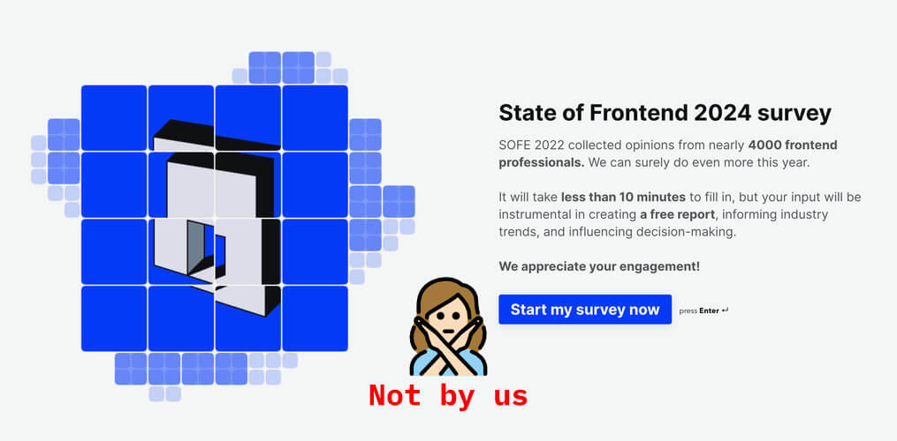

The State of the Web Platform
By Chen Hui Jing / @hj_chen



Join us on Discord.
Check out the code on GitHub.


Container queries
Pretend this is a responsive image
Cards need headers
Most cards have blurbs. This is the epitome of a generic example. Oh well…
See the Pen Container Query Bookstore by Max Böck (@mxbck) on CodePen.
Container Query Bookstore by Max BöckThe :has() selector
/* Matches menu items with submenus in them */
nav li:has(menu) a::after { … }
/* Matches <h1> elements only if they have a <p> element directly after */
h1:has(+ p) { … }
/* Matches all <section> elements that do NOT contain headings */
section:not(:has(h1, h2, h3, h4, h5, h6)) { … }
/* Matches all <section> elements that have empty <div>s */
section:has(div:empty) { … }


Node.js is used by 3.3% of all the websites whose web server we know.
–W3Techs
PHP is used by 76.2% of all the websites whose server-side programming language we know.
–W3Techs
At the very least, make sure you know what jQuery is doing for you, and what it's not.
–You might not need jQuery

See the Pen Untitled by Chen Hui Jing (@huijing) on CodePen.
Web Components

References
- You probably don't need GraphQL
- List of CSS properties, both proposed and standard
- iShadeed Lab - Container queries
- The CSS :has() selector is way more than a “Parent Selector”
- Why is ReactJS so popular?
- State of HTML 2023 now open!
- Anchor Positioning and the Popover API for a JS-Free Site Menu
- Use web components for what they’re good at
- Web components should be able to easily adapt to the host page while maintaining enapsulation
Thank you


Font is Inclusive Sans by Olivia King.